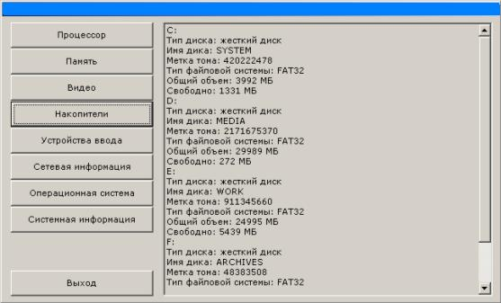

|
Программа должна отображать основные сведения о конфигурации компьютера по следующим позициям:
1. Процессор
2. Память
3. Видео
4. Накопители
5. Устройства ввода
6. Сетевая информация
7. Операционная система
8. Системная информация
Процессор – информация о названии процессора, его типе, тактовой частоте, поддерживаемых инструкциях.
Память – информация о занятости памяти, полном и доступном объеме физической и виртуальной памяти.
Видео – информация о типе и драйвере видеокарты, типе монитора, разрешении экрана, цветовой палитре, частоте обновления.
Накопители – информация о всех присутствующих накопителях (жестких дисках, CDROM, и т.д.).
Устройства ввода – информация об устройствах ввода (клавиатура, мышь).
Сетевая информация – информация о сетевом имени компьютера и его IP-адресе.
Операционная система – информация о типе операционной системы установленной на компьютере.
Системная информация – информация об имени компьютера, текущем пользователе, системном и Windows каталогах.
Внешний вид программы может быть представлен следующим образом:

Рис 14.1 Внешний вид программы.
В левой части главного окна находятся кнопки. Надписи на
кнопках указывают на ту информацию, которая будет выведена при нажатии на кнопку. В нижнем
левом углу находится кнопка выход. Нажатие на нее приводит к завершению программы.
В правой части главного окна находится область, куда выводится вся информация. Текст из
этой области может быть скопирован в буфет обмена. При необходимости, в правой стороне этой
области автоматически появляется полоса прокрутки.
Интерфейс программы написан с использованием Win32 API.
Рассмотрим основные функции:
Функция DlgProc - функция инициализации окна.Сообщение WM_INITDIALOG приводит к
инициализации диалогового окна на котором размещены все необходимые элементы. Сообщение
WM_COMMAND посылается оконной процедуре всеми стандартными элементами (в нашем случае –
кнопками). В элементе wParam посылаемых сообщений хранится информация достаточная для того,
чтобы программа смогла определить, какие действия ей необходимо выполнить при нажатии той
или иной кнопки.
Функция GetSysInfo - предназначена для получения системной информации,
а именно: имени компьютера, имени текущего пользователя, системного и Windows каталога.
Всю эту информацию возвращают стандартные функции Win32:
GetComputerName – функция возвращающая имя компьютера.
GetUserName – функция возвращающая имя текущего пользователя.
GetSystemDirectory – функция возвращающая имя системного каталога.
GetWindowsDirectory – функция возвращающая имя каталога в который установлена операционная система.
Вся информация сохраняется в строке Info. В дальнейшем стандартная функция
SendMessage посылает элементу Edit (данный элемент непосредственно выводит информацию в
окне) сообщение WM_SETTEXT и с ним передает строку Info.
Функция GetCPUInfo - служит для получения информации о процессоре, а
именно: типе процессора, его тактовой частоты, поддерживаемых инструкциях.
Информацию об имени, типе процессора, а также его тактовой частоте программа берет из
реестра Windows. Для этого при помощи Win32 функции (в дальнейшем все стандартные Win32
функции будут помечены знаком ) RegOpenKeyEx*. Далее при помощи функции RegQueryValueEx*
проводится выборка значений по следующим ключам:
- ProcessorNameString – имя процессора
- Identifier – тип процессора
- ~Mhz – частота процессора
Для определения поддерживаемых инструкций используется функция
IsProcessorFeaturePresent*. Это логическая функция, которая возвращает значение true при
поддержки процессором данной инструкции. Используются следующие входные параметры:
- PF_MMX_INSTRUCTIONS_AVAILABLE – поддержка инструкций MMX
- PF_XMMI_INSTRUCTIONS_AVAILABLE – поддержка инструкций SSE
Как и в предыдущей функции, вся полученная информация сохраняется в строке
Info, которая потом передается элементу Edit при помощи функции SendMessage*.
Функция GetMemoryStatus - предназначена для получения информации о
памяти, а именно: занятости памяти, полном и доступном объеме физической и виртуальной
памяти.
Всю эту информацию возвращает функция GlobalMemoryStatus* параметром которой
является указатель на структуру MEMORYSTATUS. В результате поля структуры будут содержать
следующую информацию:
- dwMemoryLoad – процент занятости физической памяти
- dwTotalPhys – полный объем физической памяти (в байтах)
- dwAvailPhys – объем доступной физической памяти (в байтах)
- dwTotalVirtual – полный объем виртуальной памяти (в байтах)
- dwAvailVirtual – доступный объем виртуальной памяти (в байтах)
Как и в предыдущей функции, вся полученная информация сохраняется в строке
Info, которая потом передается элементу Edit при помощи функции SendMessage*.
Функция GetInpDev - предназначена для получения информации об
устройствах ввода, а именно о клавиатуре и мыши.Информация о клавиатуре программа получает
с помощью функции GetKeyboardType*, результатом которой является значение, в зависимости
от которого определяется тип клавиатуры.Информацию о мыши дает функция GetSystemMetrics ()
с входным параметром SM_CMOUSEBUTTONS. В результате, функция возвращает количество кнопок
мыши, либо значение 0, если мышь не подключена.
Bся полученная информация сохраняется в строке Info, которая потом
передается элементу Edit при помощи функции SendMessage*.
Функция GetWinVer - предназначена для получения информации об
операционной системе установленной на компьютере.Всю необходимую информацию для определения
операционной системы возвращает функция GetVersionEx*, параметром которой является
указатель на структуру OSVERSIONINFOEX. В результате поле dwMajorVersion в сочетании с
полем dwMinorVersion структуры дают возможность определить тип операционной системы.
Поле wServicePackMajor содержит информацию об установленных Service Pack’ах, а поле
dwBuildNumber – номер сборки ОС.
Вся полученная информация сохраняется в строке Info, которая потом передается
элементу Edit при помощи функции SendMessage*.
Функция GetDisks - предназначена для получения информации о всех
присутствующих в системе накопителях (жестких дисках, CDROM, и т.д.) их типах и т.д.Для
определения имен дисков используется функция GetLogicalDrives* результатом которой
является переменная типа DWORD. Далее используя побитовые сдвиги и накладывая битовую
маску получаем информацию о присутствии того, или иного имени в системе (допустим если
значение переменной равно 000…00011101, то это означает что в системе присутствуют диски A,
C, D, E).
Для определения типа диска используется функция GetDriveType* входным
параметром которой является имя диска, а в зависимости от значения, которое вернула функция
определяется тип диска. Функция GetDriveType* может вернуть следующие значения:
- DRIVE_UNKNOWN – тип диска неизвестен
- DRIVE_FIXED – жесткий диск
- DRIVE_CDROM – CDROM
- DRIVE_REMOVABLE – съемный накопитель
- DRIVE_REMOTE – съемный диск
- DRIVE_RAMDISK – RAM диск
Информация об имени диска, типе файловой системы, метке тома определяется
при помощи функции GetVolumeInformation*, а информация об общем объеме диска, свободном и
занятом пространстве при помощи GetDiskFreeSpaceEx*. Надо отметить ту особенность, что
функция GetDiskFreeSpaceEx* возвращает значения объема диска, свободного и занятого
пространства в байтах, поэтому для хранения таких больших чисел используется тип __int64
(64-бита).
Вся полученная информация сохраняется в строке Info, которая потом
передается элементу Edit при помощи функции SendMessage*.
Функция GetNetInfo - предназначена для получения сетевой информации,
а именно: сетевого имени компьютера и IP-адреса. Сетевое имя компьютера получаем при
использовании функции GetHostName*, а IP-адрес при использовании GetHostByName.
Входным параметром этой функции служит сетевое имя компьютера, а выходным структура
HOSTENT, которая в списке h_addr_list содержит все IP-адреса компьютера.
Вся полученная информация сохраняется в строке Info, которая потом
передается элементу Edit при помощи функции SendMessage*.
Функция GetVideo - предназначена для получения информация о типе и
драйвере видеокарты, типе монитора, разрешении экрана, цветовой палитре, частоте обновления.
Для получения информации о типе видеокарты и монитора использовалась функция
EnumDisplayDevices*. В результате выполнения функции получаем структуру DISPLAY_DEVICE
которая, в зависимости от входных параметров, в поле DeviceString содержит тип видеокарты,
или монитора.Информацию о драйвере видеокарты, разрешении экрана, цветовой гамме и частоте
обновления дает функция EnumDisplaySettings, в результате выполнения которой получаем
структуру DEVMODE. Поля данной структуры будут содержать следующую информацию:
dmDeviceName – информация о драйвере видеокарты
dmPelsWidth – ширина экрана (в пикселях)
dmPelsHeight – высота экрана (в пикселях)
dmBitsPerPel – количество бит цвета на один пиксель
dmDisplayFrequency – частота обновления (в герцах)
Вся полученная информация сохраняется в строке Info, которая потом
передается элементу Edit при помощи функции SendMessage*.
|